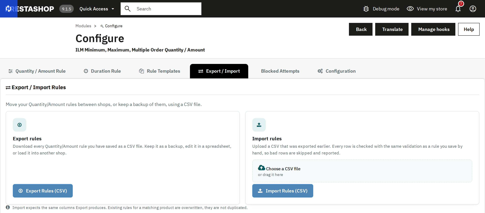

Move Quantity/Amount rules between shops, or keep a backup, using a CSV file.

| Column | Content |
|---|---|
id_product | The product id, or the category, brand, supplier or customer group id on those levels. |
id_product_attribute | The combination id, 0 for the product as a whole. |
ilmruletype | 1 Product, 2 Category, 3 Brand, 4 Supplier, 5 Customer Group. |
ilmmin, ilmmax, ilmgroup, ilmminamt, ilmmaxamt, ilmlimitmult | Min Qty, Max Qty, Multiple Qty, Min Amt, Max Amt, Limit Mult Qty. |
ilmonetime | The Duration Rule id (1 when empty). |
id_shop, id_group | Shop and customer group the rule is for, 0 for all. |
id_customer | The customer the rule is for, 0 for everyone. Optional. |
ilmallowed | Allowed quantities, e.g. 6,12,24. Optional. |
ilmconditions | The conditions, as exported. Optional. |
status | 1 on, 0 off. Optional: without it, an existing rule keeps its status and a new one is on. Import a file with status set to 0 to switch many rules off at once. |
The optional columns came with version 5.2.1, so a file exported by an earlier version still imports. Rows without any limit are not exported.